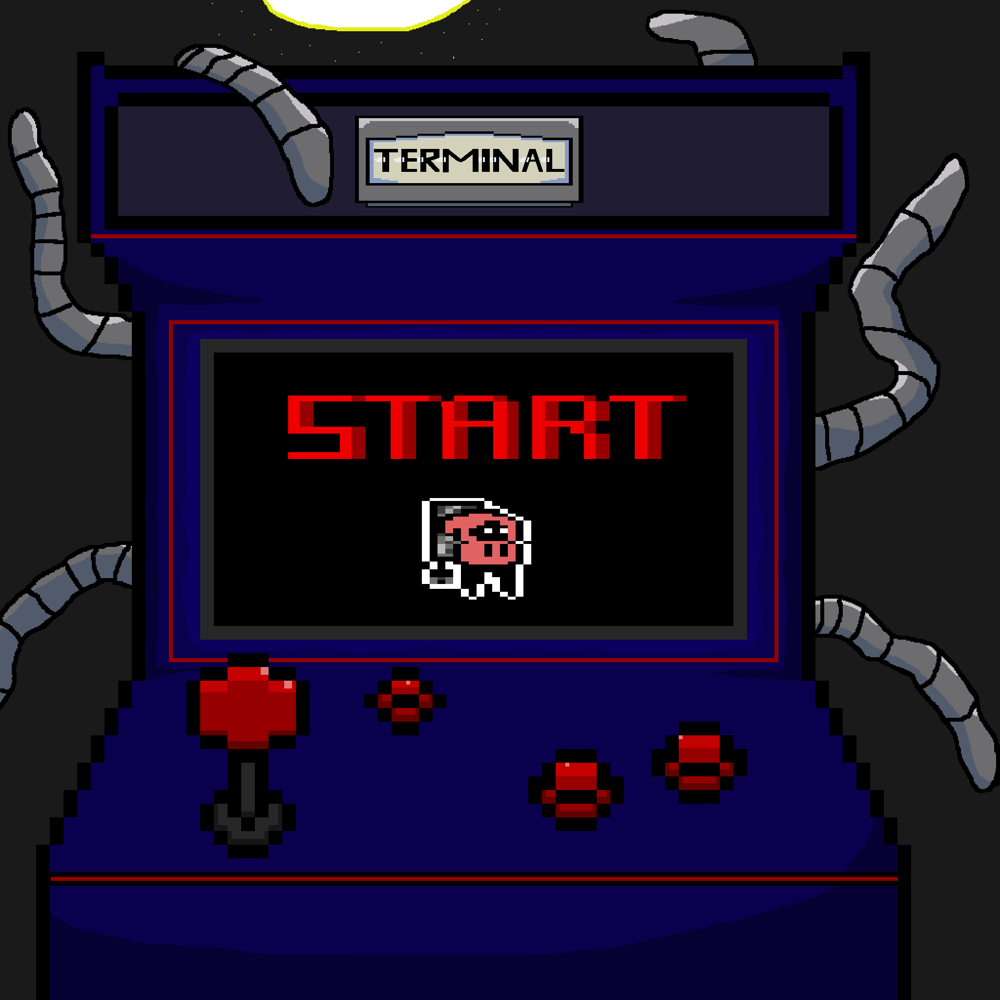
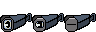
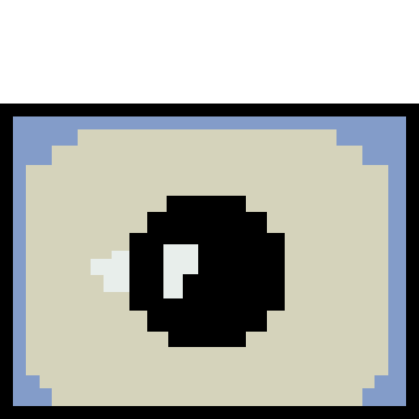
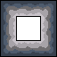
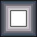

Terminal - 2026
Level Design - Prop Art
Platformer en pixel art en 2D conçu sur Unity pendant un semestre en équipe lors du cours pour adulte "PixelMania" à l'aide de l'outil Piskel.
Présentation du projet
Sidescroller en 2D, Terminal suit l'histoire d'une réparatrice de borne d'arcade. Celle-ci doit insérer un programme dans chaque borne d'arcade qui permet de résoudre les bugs de la borne en les chargeant dans un monde virtuel.
Dans ce monde virtuel le bug devient un boss qu'elle doit vaincre. À chaque boss vaincu la protagoniste peut passer à la borne suivante. Le personnage peut se déplacer à droite et à gauche, sauter, dasher, attaquer avec le clavier dans dos, viser ce qui l'empêche de bouger et tirer. Pour récupérer des munitions elle doit blesser les bosses.
Il y a trois bosses différents, un boss de mêlé qui attaque avec une épée, un boss à distance qui tire des lasers et un boss de contact qui se bat avec son corps.

Contribution
Pour ce projet j'ai réalisé plusieurs props, des plateformes et des éléments de décor dont des tilesets pour les niveaux.
En voici une sélection.
Un des niveaux se déroule dans l'écran d'un windows en pixel art d'où l'intérêt d'avoir des icônes d'applications avec lesquelles la protagoniste peut intéragir.
Les props avec des yeux se trouvent dans un niveau où l'on affronte un amalgame d'écran d'ordinateurs reliés par des câbles qu'il utilise comme des tentacules pour se battre.

Des caméras vivantes qui observent le protagoniste
Un ordinateur vivant qui observe le protagoniste
Quelques tuiles pour le décor
D'autres tuiles pour le décor